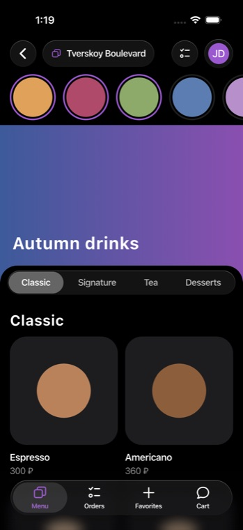
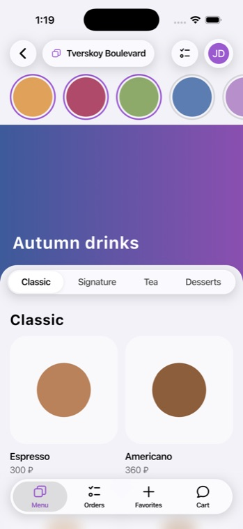
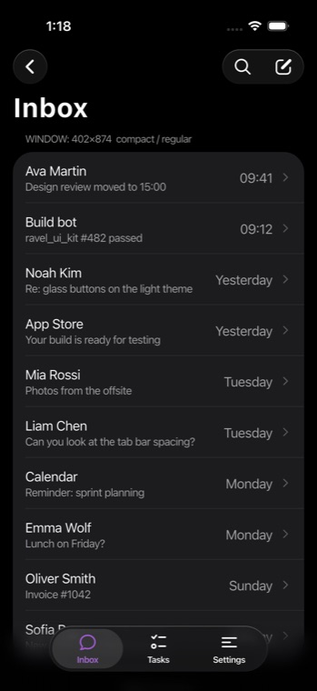
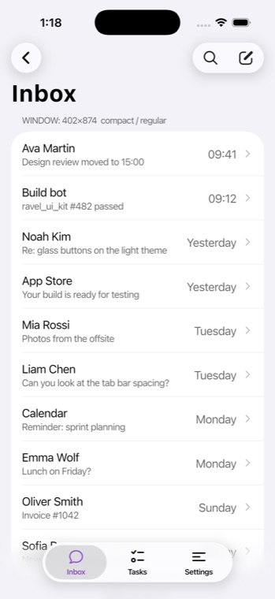

Каталог / Бары и навигация
GlassTabBar
Плавающий таб-бар iOS 26: компактная стеклянная капсула с иконкой над подписью.
Как выглядит




Что это
Измерен на нативном TabView: капсула 58 pt высотой, 90 pt на вкладку, по центру. Выбранная вкладка окрашена акцентом и лежит на собственной капсуле; при нажатии — стеклянная линза, перетаскиваемая между вкладками.
GlassTabBar(
selectedIndex: index,
onSelected: (i) => setState(() => index = i),
tabs: [
GlassTab(icon: RavelIcon(RavelIconKind.chat), label: 'Chats'),
GlassTab(icon: RavelIcon(RavelIconKind.search), label: 'Search'),
GlassTab(icon: RavelIcon(RavelIconKind.tasks), label: 'Tasks'),
],
)Кладите в SwiftUiShell.bottomBar или ChromeScaffold.bottomBar.
Параметры (из dartdoc)
GlassTabBar
| Параметр | Тип | По умолчанию | Описание |
|---|---|---|---|
tabs | List<GlassTab> | required | |
selectedIndex | int | required | |
onSelected | ValueChanged<int> | required | |
height | double | 58 | |
tabWidth | double | 90 | |
debugPressed | bool | false | Shows the pressed look permanently (for tuning the glass). |
GlassTab
| Параметр | Тип | По умолчанию | Описание |
|---|---|---|---|
icon | Widget | required | Any widget: it gets the tab's color (accent while selected) and size 26 through an IconTheme. |
label | String | required |
Импорт: import 'package:swiftuikit/swiftuikit.dart';